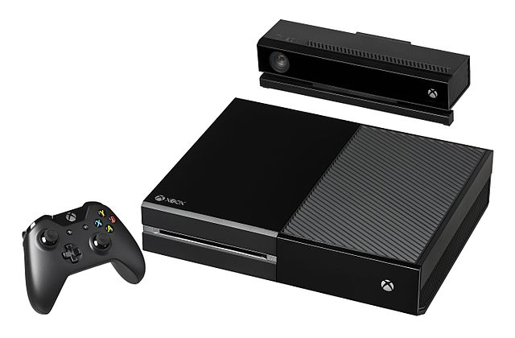
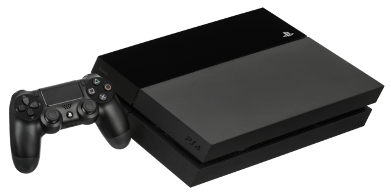
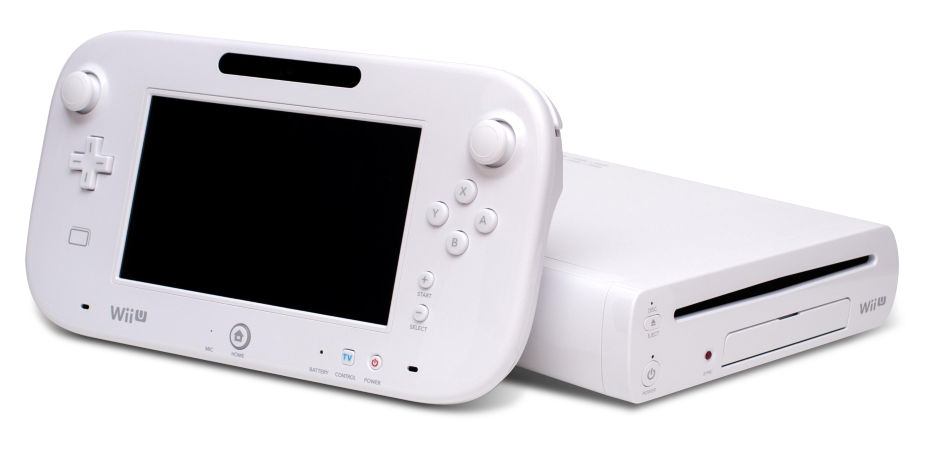
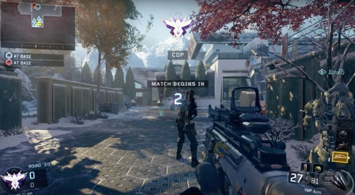

A 8ª Geração
Mathias Barbancho
A oitava geração de consoles começou em novembro de 2012 com o lançamento do Nintendo Wii U, depois disso veio os consoles como Playstation 4 e Xbox One onde esses são os maiores competidores de vendas mundial. O Playstation 4 foi anunciado em 20 de fevereiro de 2013, logo em seguida Xbox One foi anunciado em 21 de maio de 2013 para concorrer com seu rival o Playstation 4 e Wii U.
A oitava geração não entra só esses consoles e sim os consoles portáteis os que entraram na oitava geração foram o Nintendo 3DS e PS Vita (Playstation Vita), os consoles portáteis foram muito bem vistos pelos usuários pois para quem gostava de jogar mas sempre viajava ou não tinha tempo de ficar em casa agora poderia joga aonde ele quisesse, isso foi uma oportunidade que as empresas teve para conseguir mais fama e dinheiro para seu desenvolvimento e crescimento na área de consoles e jogos.
Xbox One

Xbox One é um console de videogame produzido pela Microsoft, o terceiro da empresa desde o lançamento do Xbox, é e introduzido no mercado oito anos após o lançamento do Xbox 360. O Xbox One apresenta gráficos de alta definição superiores aos vistos no seu antecessor e similares aos apresentados pelo seu maior rival, o Playstation 4.
O Xbox One foi anunciado no dia 21 de maio de 2013, apresentado ao público pelo presidente de negócios de entretenimento interativo da Microsoft, Don Mattrick, em um evento chamado Xbox Reveal, como o sucessor do Xbox 360. Ele compete com o Nintendo Wii U e o Playstation 4. Seu lançamento oficial foi feito em novembro de 2013. Desde seu lançamento até janeiro de 2016 já foram vendidas mais de 25 milhões de unidades. O Xbox One veio trazendo junto com ele seu Kinect 2.0, conectividade de mídia, controle mais confortável, controle de voz, Xbox live e gravador de vídeo.
Playstation 4

O Playstation 4 (oficialmente abreviado para PS4) é uma console de videogame produzido pela Sony Interactive entertainment, sucessora da Playstation 3 e a quarta parte da série Playstation. Foi anunciado em fevereiro de 2013 durante uma conferência da imprensa Sony em Nova Iorque, num evento conhecido como “Playstation meeting 2013” que tinha como objetivo descobrir “ O futuro da Playstation”. O Playstation 4 é o primeiro console da Sony a ser oficialmente e legalmente editada na China desde a Playstation 2, depois do levantamento da proibição que durou 14 anos. A Playstation 4 compete diretamente com a wii u e com o Xbox one consoles da oitava geração. O PS4 vem com controlador, o controle novo chamado de dualshock que agradou muitos fãs da Sony , vem com a Playstation câmera , e se pode adaptar com seu vr(realidade virtual)
Wii U

O Wii U é um console de videogame da Nintendo. Foi apresentado na Electronic Entertainment Expo (E3) em 7 de junho de 2011 como o sucessor do wii. Logo após o anúncio houve uma queda de 5,7% nas ações da Nintendo, uma grande baixa que não ocorria desde o lançamento do Wii em 2006. No sistema online, uma mudança perspectiva já revelada é sistema de contas únicas dos usuários, abandonando os Friend Codes do Wii. Sua classificação em geração é controversa, alguns afirmam que e de oitava geração, rumores esses que aparecem logo depois do seu lançamento quando não se conhecia as especificações técnicas do console. O Wii U é um console que se envolve um tablet como console mais modificado com analógico e botões para pode joga, e um pouco considerado portátil , e bem leve problema dele e que tem que leva pra onde for seu carregador
Call of duty : Black Ops III

Call of duty : black ops III é um Jogo eletrônico de tiro produzido pela empresa Treyarch e lançado no dia 6 de novembro de 2015 pela Activision para Microsoft Windows, Playstation 4 e Xbox One. É o décimo terceiro título call of duty, contudo, a campanha desse jogo não é uma continuação do arco “Black ops”, que se iniciou em call of duty : world at war (2008) e foi até black ops II. Uma versão limitada que apenas inclui os modos de multiplayer foi produzida pelos estúdios Beenox e Mercenary technology e lançada para Playstation 3 e Xbox 360. O call of duty : black ops III veio com gráficos para deixa muitos jogos de queixo caído , e vem mostrando uma campanha incrível que poucos jogos não teve ideia de trazer , sua jogabilidade está muito diferente comparado com suas outras campanhas